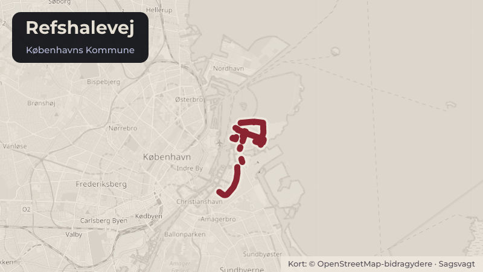

Besluttet 18. maj, Klima-, Miljø- og Teknikudvalget
Høring af miljøkonsekvensrapport for opgradering af Refshalevej, Indre By

Kort fortalt
- Forslaget
- Miljøkonsekvensrapport for opgradering af Refshalevej (bilag 2) med tilhørende udkast til VVM-tilladelse (bilag 3) sendes i offentlig høring i otte uger.
- Hvem
- Klima-, Miljø- og Teknikudvalget
- Hvornår
- Mandag 18. maj 2026
- Status
- Besluttet. Indstillingen blev godkendt uden afstemning.Beslutningen er forkortet her. Læs hele beslutningen
- Næste skridt
- Når Klima-, Miljø- og Teknikudvalget har godkendt indstillingen, vil Klima-, Miljø- og Teknikforvaltningen igangsætte den offentlige høring i otte uger.
Er noget forkert her? Skriv til os
Læs hele sagen Kommunens egen tekst
Indstilling
Klima-, Miljø- og Teknikforvaltningen indstiller, at Klima-, Miljø- og Teknikudvalget godkender,
• at miljøkonsekvensrapport for opgradering af Refshalevej (bilag 2) med tilhørende udkast til VVM-tilladelse (bilag 3) sendes i offentlig høring i otte uger.
Problemstilling
Refshalevej er i dag den eneste offentlige vej ud til Refshaleøen, og vejen har behov at blive opgraderet, da forholdene for især cyklister og gående er meget dårlige og trafiksikkerheden problematisk. På den baggrund blev der i Budget 24 (A, B, C, F, I, O og V) (BR 5. oktober 2023) og i Overførselssagen 2023-2024 (A, B, C, F, I, O og V) (BR 2. maj 2024) afsat i alt 37,6 mio. kr. til en miljøkonsekvensvurdering af en trafikal opgradering af Refshalevej.
Miljøkonsekvensrapporten er nu færdig og kan med Klima, Miljø- og Teknikudvalgets godkendelse sendes i otte ugers offentlig høring sammen med Københavns Kommunes udkast til VVM-tilladelse, der er vedlagt som bilag 3.
Løsning
Københavns Kommune er myndighed for miljøkonsekvensvurderingen og vil også være bygherre på opgraderingen af vejen, da Refshalevej er en kommunal vej.
Da Refshalevej forløber gennem et område, der er beskyttet som fortidsminde, ansøgte Københavns Kommune i 2022 Slots- og Kultursstyrelsen om tilladelse til at udvide vejen. Ansøgningen kunne kun delvist imødekommes inden for rammerne af museumsloven, og Københavns Kommune kunne med afsæt heri ikke udvide vejtracéet tilstrækkeligt til at forbedre trafiksikkerheden og tilgængeligheden. Konkret ville det ikke være muligt at adskille gående, cykler og biler i hver sit spor, indenfor de standarder Københavns Kommune bruger. På den baggrund anmodede Københavns Kommune Transportministeriet om, at der udarbejdes lovgivning, der kan muliggøre opgradering af Refshalevej i det omfang, som er trafikalt nødvendigt, hvilket Transportministeriet var imødekommende overfor.
For at sikre sammenhæng mellem lovgivning og miljøkonsekvensvurdering har Københavns Kommune og Transportministeriet indgået en samarbejdsaftale om miljøkonsekvensvurdering af Refshalevej, som indebærer, at Sund & Bælt har gennemført miljøkonsekvensvurderingen.
I miljøkonsekvensrapporten belyses projektets påvirkninger af en bred vifte af miljøemner i både anlægs- og driftsfasen. Miljøpåvirkningerne er vurderet i forhold til et referencescenarie, som er den situation, der vil være i området, hvis projektet ikke gennemføres.
Det miljøvurderede projekt har til formål at forbedre trafiksikkerheden og tilgængeligheden for alle trafikantgrupper gennem etablering af adskilte fortove, cykelstier og kørespor. Projektet indebærer en opgradering af Refshalevej på den strækning, der forløber fra den sidste del af Forlandet, før sammenfletningen med Refshalevej øst for Minebådsgraven og godt 600 m mod nord, til parkeringsarealet på Refshaleøen. Med projektet etableres adskilt cykelsti og fortov i begge retninger, samt fastholdes to vejbaner til biler (én i hver retning). Derudover etableres buslommer og busperroner. Se projektet (hovedforslag) og alternative løsninger i oversigtskort i bilag 6.
Indhold i miljøkonsekvensvurderingen
Forvaltningen har i perioden fra den 4. december 2024 til 2. januar 2025 sendt et afgrænsningsnotat, der omhandler, hvilke miljøemner der skal belyses i miljøkonsekvensrapporten, i offentlig høring (bilag 4). Høringssvarene er samlet i en hvidbog. Herefter er det blevet fastlagt i en udtalelse, at miljøkonsekvensrapporten skal belyse miljø-emnerne støj og vibrationer, natur, bilag IV arter, Natura 2000, overfladevand og vandkvalitet, grundvand, jord og forurening, kulturarv, trafikale påvirkninger, materielle goder, luft, samt mennesker og sundhed. Desuden projektets landskabelige og visuelle påvirkning. Virkningerne af projektet skal vurderes i forhold til et referencescenarie, som udgøres af den aktuelle miljøtilstand inklusive den udvikling, der forventes at finde sted, hvis projektet ikke gennemføres.
Miljøkonsekvensrapportens hovedresultater:
I miljøkonsekvensrapporten er der redegjort for projektets miljøpåvirkning både i anlægsfasen og i driftsfasen, når vejen er taget i brug.
• Kulturarv og Landskab: Projektet medfører væsentlige påvirkninger for kulturarv og landskab, idet dele af det fredede fortidsminde Christianshavns Vold og en historisk mur forudsættes fjernet. Som alternativer til hovedforslaget er der på den baggrund undersøgt to alternative tiltag med henblik på at afbøde konsekvenserne for fortidsmindet: Et kompenserende tiltag hvor der etableres en tilsvarende vold ved siden af den oprindelige placering, og et afværgende tiltag, hvor Refshalevej opdeles i to spor på hver side af volden. Selvom de to tiltag kan reducere konsekvenserne, kan en væsentlig påvirkning af kulturarv og landskab ikke undgås, idet områdets visuelle karakter og kulturhistoriske oplevelsesværdi fortsat ændres.
• Trafik: De trafikale forhold forbedres markant i driftsfasen, hvor etableringen af cykelstier, fortove og buslommer øger trafiksikkerheden og fremkommeligheden. I anlægsfasen forekommer midlertidige gener, herunder en væsentlig påvirkning af fremkommeligheden i anlægsetape 5, hvor trafikken reguleres med midlertidige signaler.
• Støj og vibrationer: Vibrationer under anlægsarbejdet medfører en væsentlig påvirkning, da de kan medføre skader på sårbare bygninger. Dette håndteres gennem løbende overvågning og måling, så arbejdet kan standses ved overskridelser af grænseværdier. Støj fra anlægsarbejdet overskrider kortvarigt grænseværdier, men uden varig effekt. I driftsfasen medfører projektet ingen væsentlig ændring i støjbelastningen.
• Materielle goder: Der vil være en midlertidig påvirkning gennem omlægning af ledninger og kabler, men forsyningssikkerheden opretholdes. I driftsfasen har projektet en væsentlig positiv effekt, da det forbedrer trafiksikkerhed, tilgængelighed og adgang til rekreative områder både på land og vand.
• Biologisk mangfoldighed: Projektet (hovedforslaget) berører ikke Natura 2000-områder, og beskyttede naturtyper eller arter påvirkes ikke væsentligt. De alternative løsninger forudsætter inddragelse af en mindre del af et § 3-beskyttet område. Inddragelsen vil kræve en dispensation fra naturbeskyttelseslovens § 3.
For de øvrige undersøgte parametre vil projektet give anledning til ingen eller ubetydelige påvirkninger.
Forvaltningens vurdering
Det er VVM-myndighedens vurdering, at projektet kan gennemføres både for hovedscenariet og for de alternative forslag i form af det kompenserende tiltag og det afværgende tiltag.
Samlet set vurderes påvirkningen for kulturarv og landskab som væsentlig, også selvom projektet indeholder tiltag til afbødning af påvirkningen. Der er i projektet indbygget afværgeforanstaltninger, og der er i udkast til VVM-tilladelse (Bilag 3) stillet de vilkår, der er vurderet rimelige og proportionelle. Det er forvaltningens vurdering, at både hovedforslaget og de alternative forslag er mulige løsninger i udkast til VVM-tilladelse.
Det bemærkes, at det er en forudsætning for at meddele endelig VVM-tilladelse til projektet, at der sker en lovændring, som muliggør opgraderingen af vejen, som følge af den væsentlige påvirkning på det beskyttede fortidsminde.
Parkering
Der findes i dag fire afmærkede p-pladser på Refshalevej ud for Quinti Lynette. Der foretages desuden parkering på grusarealet i vestsiden af vejen ved Minebådsgraven. De fire p-pladser nedlægges i forbindelse med projektet, og muligheden for parkering i vejens vestside ved Minebådsgraven fjernes.
Politisk handlerum
Klima- Miljø- og Teknikudvalget kan vælge ikke at sende miljøkonsekvensrapporten og udkast til VVM-tilladelse i offentlig høring. Intro til VVM (Bilag 5) uddyber det politiske handlerum i sager med VVM.
En beslutning om ikke at sende sagen i offentlig høring forudsætter faglig begrundelse, fx at:
• et eller flere emner i miljøkonsekvensrapporten ikke er tilstrækkelig fagligt begrundet
Efter offentlig høring af miljøkonsekvensrapport og udkast til VVM-tilladelse vil udvalget blive forelagt miljøkonsekvensrapport samt VVM-tilladelse til endelig vedtagelse. Her vil udvalget skulle tage stilling til, hvilken løsning, der ønskes etableret.
Økonomi
Denne indstilling har ikke i sig selv økonomiske konsekvenser for Københavns Kommune.
Videre proces
Når Klima-, Miljø- og Teknikudvalget har godkendt indstillingen, vil Klima-, Miljø- og Teknikforvaltningen igangsætte den offentlige høring i otte uger. Efter høringen udarbejder forvaltningen en hvidbog med henblik på endelig politisk vedtagelse af miljøkonsekvensrapport samt VVM-tilladelse ultimo 2026. Det er også i den forbindelse, at der skal træffes politisk beslutning om, hvorvidt det er hovedløsningen eller et af de alternative forslag, der ønskes etableret. Det er en forudsætning for, at kommunen kan meddele VVM-tilladelsen, at Folketinget vedtager lovgivning, som muliggør etablering af det miljøkonsekvensvurderede projekt.
Beslutning
Indstillingen blev godkendt uden afstemning.
Det Konservative Folkeparti og Liberal Alliance afgav følgende protokolbemærkning:
”Konservative ønsker at bevare visualiseringen af Københavns historiske vold, så vi bevarer og husker Københavns historie.”
Bilag
- Bilag 1 Overblik over politisk behandling
- Bilag 2 Miljøkonsekvensrapport
- Bilag 3 Udkast til VVM-tilladelse
- Bilag 4 Udtalelse afgrænsningsnotat og hvidbog
- Bilag 5 Intro til VVM
- Bilag 6 kortoversigt
Kilde: Københavns Kommune, Klima-, Miljø- og Teknikudvalget, referat fra mødet mandag 18. maj 2026, punkt 15. Læs den originale sag hos kommunen.
Steder i sagen: Refshalevej